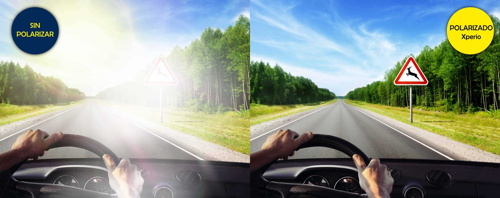

Lentes Progresivos
Son lentes que permiten ver bien a todas las distancias (lejos, intermedia y cerca). Ideales para aquellas personas que requieren una vision integral, obteniendo de esta manera un enfoque apropiado de manera clara y uniforme entre larga, corta y media distancia.

Lentes ocupacionales
Son lentes que se utilizan para una actividad/ocupacion especial que permiten una excelente vision de distancia intermedia y cerca para trabajar comodamente en ambitos reducidos.

Lentes Polarizados
Por su capacidad de bloquear las ondas horizontales propagadas por la luz, las lentes polarizadas proporcionan una protección eficaz contra el deslumbramiento (concentración de luz reflejada, capaz de cegar).